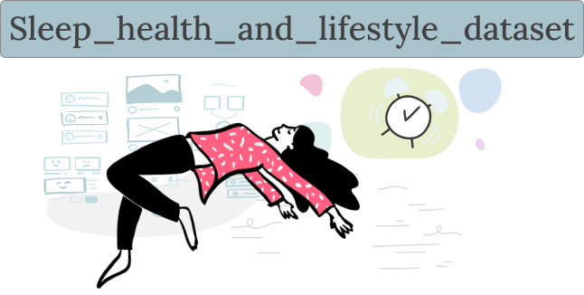

In this project, I demonstrated my proficiency in data preparation and manipulation by utilizing SQL
to clean and refine a complex dataset.
Employing SQL's powerful querying capabilities, I systematically addressed missing values, removed duplicates, and
standardized the data for consistency.
This process not only enhanced the quality of the data but also paved the way for meaningful insights that can be
derived from this vital information.

Project name: Student Mental Health
By combining SQL data exploration techniques with a rich dataset encompassing various dimensions of mental health, the
project aims to contribute valuable insights to our understanding of anxiety and its
relationships with demographic and psychological factors. The outcomes of this project could provide a basis for further
research and intervention strategies to promote mental well-being among individuals in various contexts.

Project name: Sleep, Health and Lifestyle
I analyzed patterns, correlations, and trends in sleep habits and daily decisions using Python's pandas, matplotlib, and
seaborn tools. This project demonstrates my ability to use my programming skills to decipher complex data stories and
provide useful insights for improving sleep quality and promoting healthier lifestyles.

My collection of dynamic data visualizations and insightful dashboards created using Power BI. In this section
I showcase a series of projects where I have used Power BI to transform raw data into compelling narratives. I've crafted interactive reports
that offer deep insights into diverse datasets. These
projects demonstrate ways to communicate complex data stories that drive informed
decisions.

This project showcases my ability to unravel information through data exploration, allowing me to
tailor communication strategies that resonate, inspire, and drive measurable outcomes.